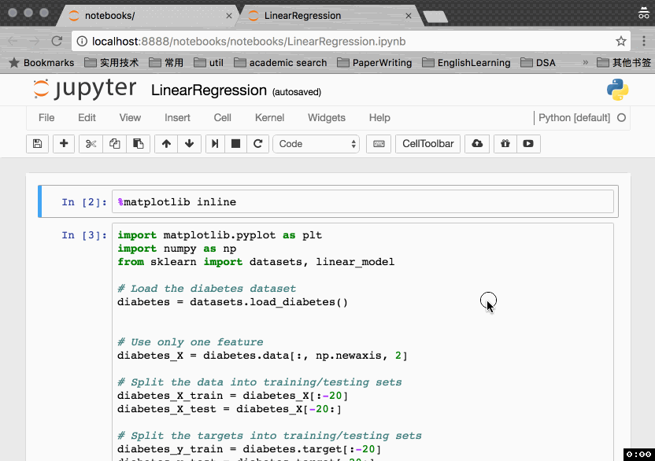

[译]27 个Jupyter Notebook的小提示与技巧
Jupyter notebook, 前身是 IPython notebook, 它是一个非常灵活的工具，有助于帮助你构建很多可读的分析，你可以在里面同时保留代码，图片，评论，公式和绘制的图像。

Jupyter具有非常强的可扩展性，支持很多编程语言，并且易于部署到你的个人电脑和几乎所有的服务器上 -- 你只需要使用ssh或http接入即可。最重要的是，它完全免费。
Jupyter默认设置使用 Python kernel，正因此以前叫做 IPython notebook. Jupyter notebook 源自于 Jupyter 项目, Jupyter这个名字是它被设计所支持三个核心编程语言的缩写词：JUlia,PYThon, 和 R, 启发自木星这个词：Jupiter.
接下来的内容将向你展示27个让 Jupyter 用的更加舒心的建议与技巧。
1. Keyboard Shortcuts¶
每一个进阶用户都知道，键盘快捷键将会为我们节省许多时间。Jupyter在顶部的菜单里保留了许多快捷键：Help > keyboard Shortcuts. 每次更新Jupyter时，都值得再次进行查看，因为新的快捷键总是不断被添加进来。
另一个查看快捷键的方式是使用命令面板：Cmd + Shift + P(或者Linux和Windows上 Ctrl + Shift + P)。这个对话框将会帮助你通过名称运行任何命令 -- 这非常有用，尤其当你不知道一个命令的快捷键或者你想要执行的命令没有快捷键时。这个功能非常类似与Mac上的Spotlight搜索，一旦你开始使用这个功能，你就会发现没有它的日子该怎么办！

这里是一些我喜欢的快捷键：
Esc + F查找和替换你的代码，但不包括代码的输出内容。Esc + o打开代码块输出。选择多个 cell。
Shift + Jmore ...